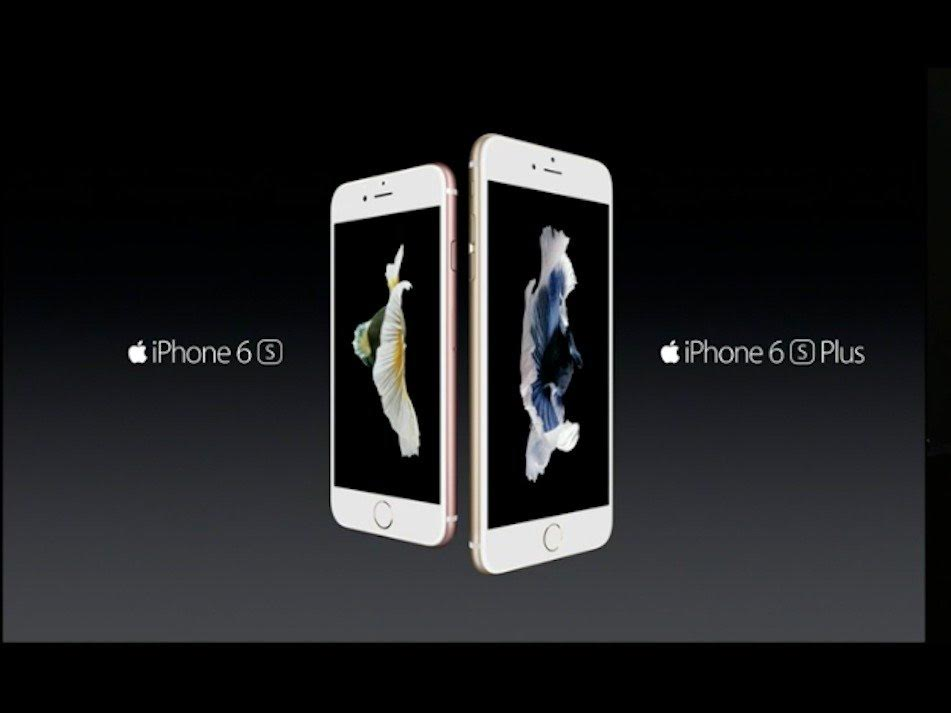
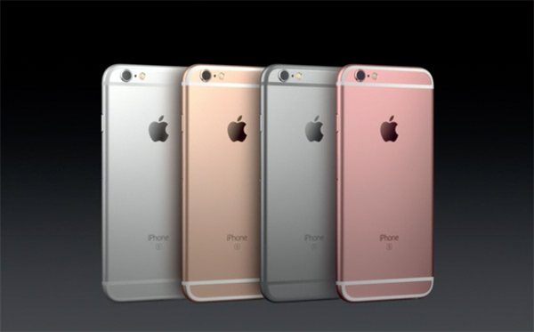

Rạng sáng 10/9 (giờ Việt Nam), Apple đã chính thức trình làng bộ đôi iPhone mới nhất của hãng, với tên gọi iPhone 6S và iPhone 6S Plus cùng những tính năng chính xác như đồn đoán: màn hình cảm ứng lực, vi xử lý A9 tốc độ cao và camera nâng cấp.
Năm nay, iPhone rơi đúng vào chu kỳ "S". Điều này có nghĩa là Táo khuyết vẫn giữ nguyên thiết kế cơ bản của thiết bị và chỉ bổ sung thêm các tính năng mới để thu hút người dùng. Ở các chu kỳ S trước đây, iPhone 4S từng giới thiệu phần mềm trợ lý ảo Siri trong khi iPhone 5S có sự hiện diện của máy quét vân tay TouchID.
Giá bán tại Mỹ cho những người dùng ký hợp đồng sử dụng dịch vụ 2 năm với nhà mạng không thay đổi: vẫn là 199 USD cho bản 16GB và 299 USD cho iPhone 6 Plus. Apple bắt đầu nhận đặt mua từ ngày 12/9 và mở bán tại các cửa hàng từ ngày 25/9.